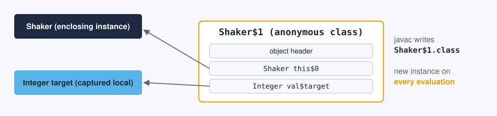
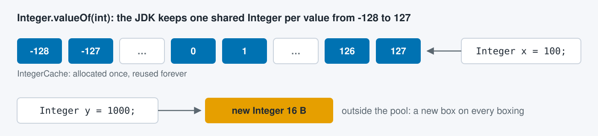
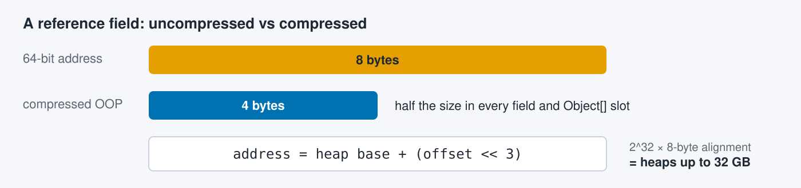
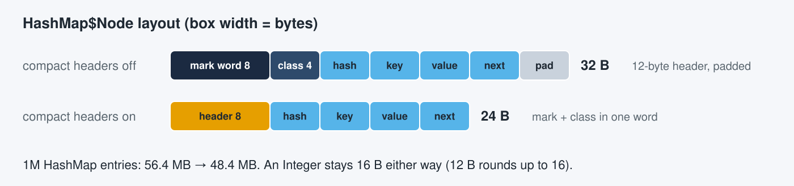
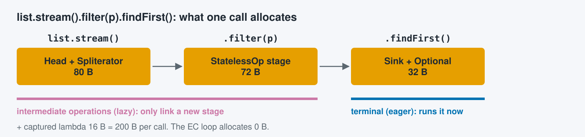
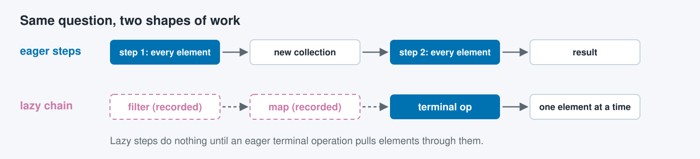
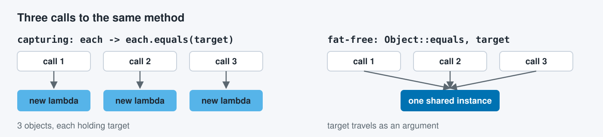
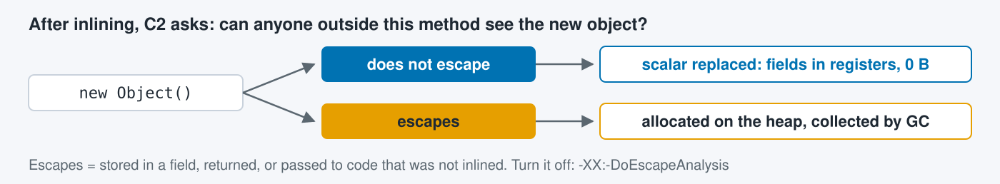

Intro · Problem · Definitions · Solutions · AI skills · Wrap-up
An anonymous class has no name in the code; javac names it Outer$1.

A new instance on every evaluation, even when nothing is captured.
In an instance method it always holds the enclosing this (this$0).
Intro · Problem · Definitions · Solutions · AI skills · Wrap-up
A pool hands out the same objects again instead of allocating new ones.

The JDK pools small Integers: autoboxing calls Integer.valueOf(int).
-128 to 127 come from the cache; any other value is a new 16 B object.
Intro · Problem · Definitions · Solutions · AI skills · Wrap-up
A 4-byte offset that HotSpot stores instead of an 8-byte reference, for heaps under 32 GB.

Every reference field and Object[] slot shrinks from 8 to 4 bytes.
On by default (-XX:+UseCompressedOops).
Intro · Problem · Definitions · Solutions · AI skills · Wrap-up
The object header shrinks from 12 bytes to one 8-byte word (JEP 519, JDK 25).

Off by default: -XX:+UseCompactObjectHeaders.
An object only shrinks if it then fits a smaller 8-byte boundary.
Intro · Problem · Definitions · Solutions · AI skills · Wrap-up
Intermediate operations (filter, map) are lazy; the terminal operation (anyMatch, count) is eager and runs the pipeline.

Every call builds this graph again; escape analysis removes none of it.
Intro · Problem · Definitions · Solutions · AI skills · Wrap-up

Eager: runs when called and returns a result.
Lazy: recorded; runs one element at a time when a result is needed.
Intro · Problem · Definitions · Solutions · AI skills · Wrap-up
A capturing lambda holds values from its scope; a fat-free one uses only its parameters.

Fat-free: one instance, created once and reused on every call.
Capturing: a new object that holds the captured values, per evaluation.
Intro · Problem · Definitions · Solutions · AI skills · Wrap-up
A C21 JIT2 check: when no one outside the method can see a new object, the allocation is removed.

Works only on compiled, inlined code, after warm-up.
1 C2: the HotSpot server compiler, the optimizing compiler for hot methods (C1 is the fast client compiler).
2 JIT: just-in-time compiler, which turns frequently run bytecode into machine code while the program runs.